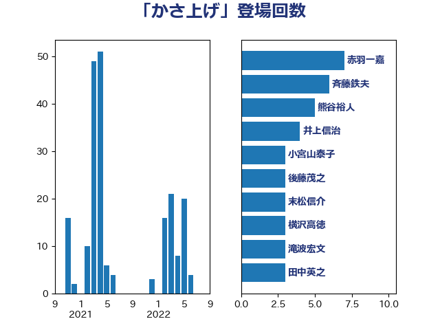

単語「かさ上げ」

| 赤羽一嘉 | 公明党 | 7 回 |
| 斉藤鉄夫 | 公明党 | 6 回 |
| 熊谷裕人 | 立憲民主党 | 5 回 |
| 井上信治 | 自由民主党 | 4 回 |
| 小宮山泰子 | 立憲民主党 | 3 回 |
| 後藤茂之 | 自由民主党 | 3 回 |
| 末松信介 | 自由民主党 | 3 回 |
| 横沢高徳 | 立憲民主党 | 3 回 |
| 滝波宏文 | 自由民主党 | 3 回 |
| 田中英之 | 自由民主党 | 3 回 |
| 階猛 | 立憲民主党 | 3 回 |
| 高橋千鶴子 | 日本共産党 | 3 回 |
| 塩田博昭 | 公明党 | 2 回 |
| 安達澄 | 無所属 | 2 回 |
| 宮本岳志 | 日本共産党 | 2 回 |
| 小沼巧 | 立憲民主党 | 2 回 |
| 森屋隆 | 立憲民主党 | 2 回 |
| 武田良太 | 自由民主党 | 2 回 |
| 田村貴昭 | 日本共産党 | 2 回 |
| 笠井亮 | 日本共産党 | 2 回 |
| 芳賀道也 | 国民民主党 | 2 回 |
| 谷田川元 | 立憲民主党 | 2 回 |
| 井上英孝 | 日本維新の会 | 1 回 |
| 伊佐進一 | 公明党 | 1 回 |
| 勝部賢志 | 立憲民主党 | 1 回 |
| 吉川沙織 | 立憲民主党 | 1 回 |
| 嘉田由紀子 | 無所属 | 1 回 |
| 坂本哲志 | 自由民主党 | 1 回 |
| 堤かなめ | 立憲民主党 | 1 回 |
| 宮本徹 | 日本共産党 | 1 回 |
| 小沢雅仁 | 立憲民主党 | 1 回 |
| 尾崎正直 | 自由民主党 | 1 回 |
| 山添拓 | 日本共産党 | 1 回 |
| 山際大志郎 | 自由民主党 | 1 回 |
| 岡本三成 | 公明党 | 1 回 |
| 岡田克也 | 立憲民主党 | 1 回 |
| 島村大 | 自由民主党 | 1 回 |
| 平沢勝栄 | 自由民主党 | 1 回 |
| 後藤祐一 | 立憲民主党 | 1 回 |
| 打越さく良 | 立憲民主党 | 1 回 |
| 柴田巧 | 日本維新の会 | 1 回 |
| 梶山弘志 | 自由民主党 | 1 回 |
| 榛葉賀津也 | 国民民主党 | 1 回 |
| 渡辺猛之 | 自由民主党 | 1 回 |
| 熊野正士 | 公明党 | 1 回 |
| 田村憲久 | 自由民主党 | 1 回 |
| 福島伸享 | 無所属 | 1 回 |
| 若松謙維 | 公明党 | 1 回 |
| 蓮舫 | 立憲民主党 | 1 回 |
| 藤川政人 | 自由民主党 | 1 回 |
| 西村康稔 | 自由民主党 | 1 回 |
| 野中厚 | 自由民主党 | 1 回 |
| 野田聖子 | 自由民主党 | 1 回 |
| 鈴木憲和 | 自由民主党 | 1 回 |
| 長友慎治 | 国民民主党 | 1 回 |
| 長妻昭 | 立憲民主党 | 1 回 |
| 長谷川岳 | 自由民主党 | 1 回 |
| 青山大人 | 立憲民主党 | 1 回 |
| 青木愛 | 立憲民主党 | 1 回 |
| 鳩山二郎 | 自由民主党 | 1 回 |